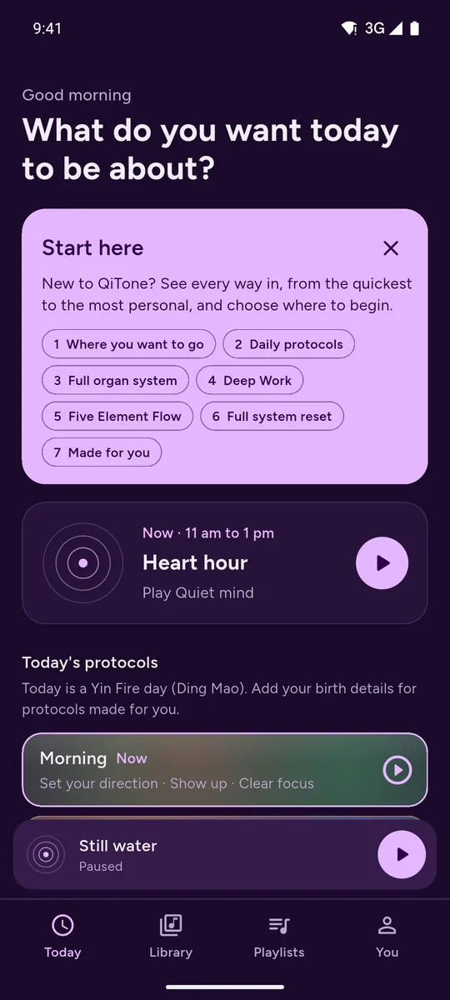
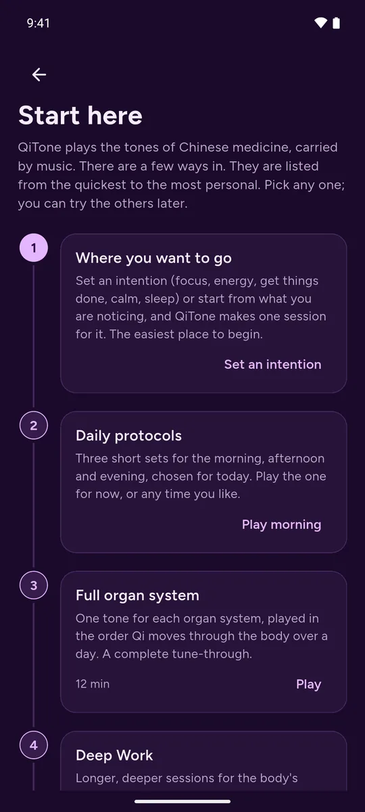
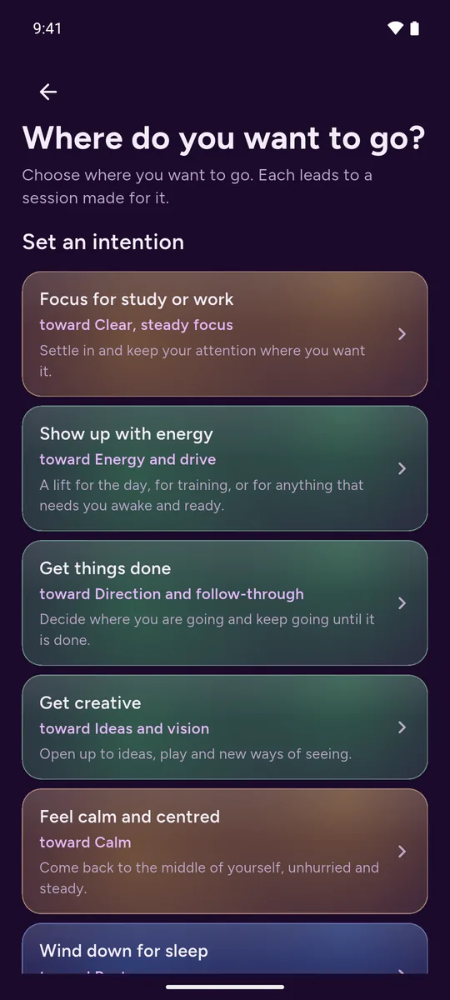
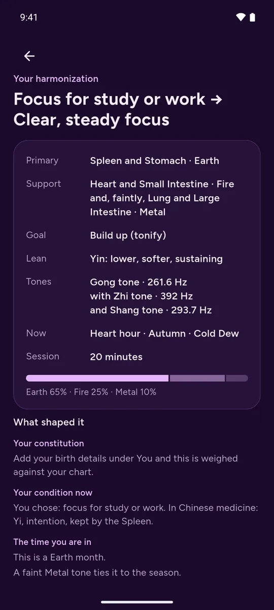
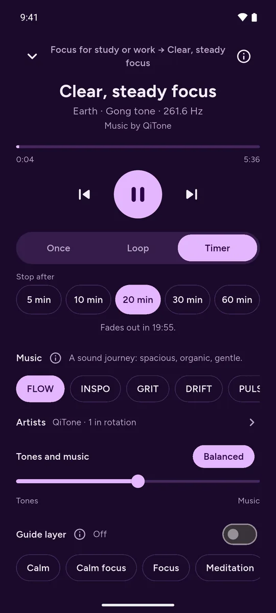
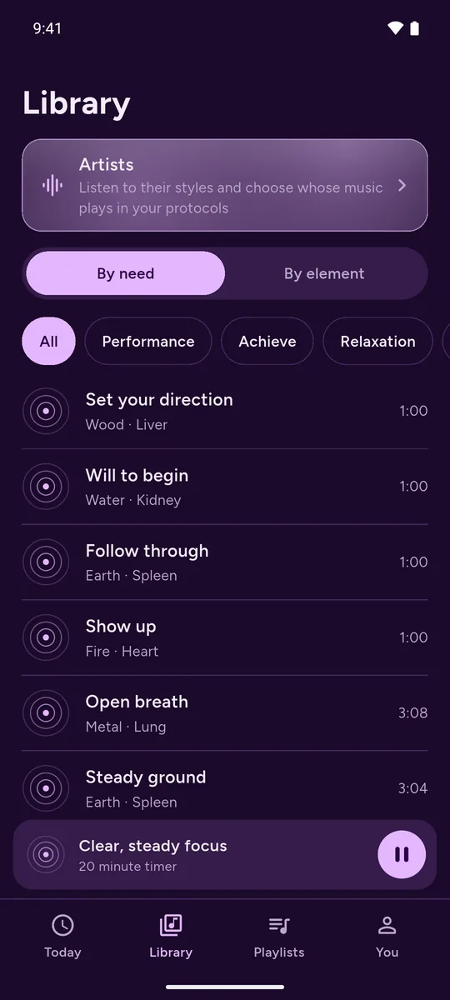
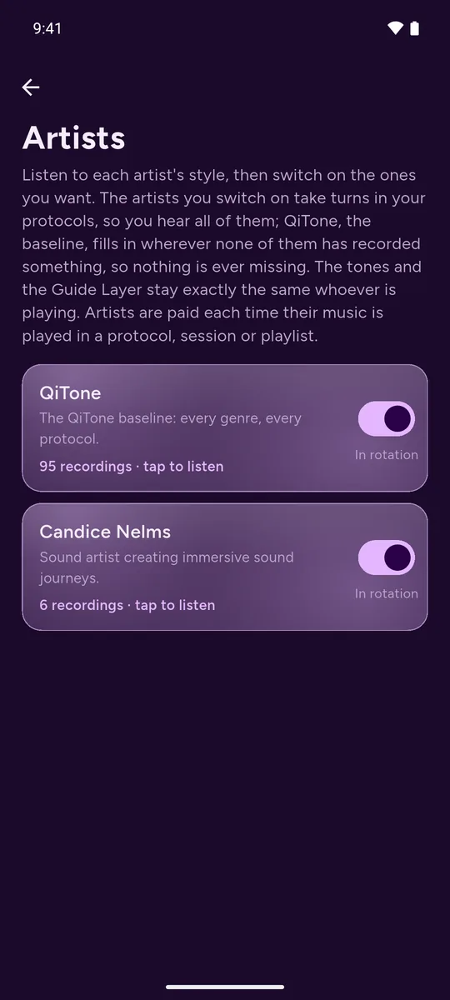
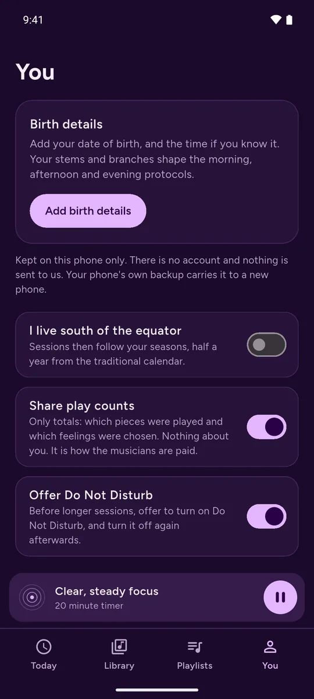

QiTone
Sound that brings you back to your best.
A personalized sound experience inspired by more than 3,000 years of Chinese medicine, to sharpen your focus, find your calm, power what you set out to achieve, and restore yourself when you're spent.








Swipe to see more
Designed and developed by Candice Nelms, Dipl. OM, Diplomate of Oriental Medicine, QiTone was created to make Chinese medicine more accessible through immersive music and guided sound journeys.
QiTone combines frequency-based tones, music, traditional Chinese medicine frameworks, and optional binaural neural audio for calm, focus, rest, performance, meditation, and emotional balance.
Rather than requiring you to understand complex Chinese medical theory, QiTone translates it into sound.
The app draws from the Five Elements, organ clock, Stems & Branches, seasonal cycles, Qi pathways, and relationships between body systems. Sessions can adapt to your goals, constitutional profile, time of day, season, and how you feel in the moment.
Ancient principles. Modern sound.
Traditional Five Element tones provide the foundation. Immersive music carries the experience. Personalized protocols determine how the tones work together.
With compatible stereo headphones, QiTone can add an optional binaural Guide Layer: subtle left-and-right audio designed to support the intended mental state of the session, from calm and focused attention to meditation, performance, deep rest, and sleep preparation.
The Guide Layer complements the Chinese medicine protocol: the tonal system determines the body-system focus while the binaural layer supports the state of mind for the journey.
A sound journey shaped around you
QiTone can use your birth date, time, and location to create a personalized Stems & Branches profile, bringing traditional constitutional and timing principles into your listening experience.
That profile can be considered alongside:
- How you feel right now
- What you want from the session
- The current organ-clock period
- The season and solar cycle
- Five Element relationships
- Your constitutional tendencies
The result is not simply a playlist. It is a sound journey that can change with you.
Explore the systems
Follow a Five Element Flow through the nourishing cycle.
Move through the Full Organ System, following Qi through the body's traditional pathway architecture.
Experience the Triple Burner Full System Reset, moving through the Upper, Middle, and Lower systems before bringing them together into an integrated whole.
Or choose how you feel and allow QiTone to build a personalized protocol for the moment.
Choose where you want to go
Use QiTone for:
- Calm
- Focus
- Relaxation
- Performance
- Emotional balance
- Meditation
- Deep rest
- Sleep preparation
- Full-system balance
Choose your intention, follow the organ clock, explore your personalized profile, or simply press play and begin a guided sound journey.
A deeper listening system
QiTone includes:
- Five Element tone architecture
- Personalized Stems & Branches protocols
- Organ-clock guidance
- Five Element Flow
- Full Organ System journeys
- Triple Burner Full System Reset
- Yin and Yang tonal voicings
- Tonify, regulate, disperse, and harmonize approaches
- Layered primary and supporting tones
- Personalized protocols based on how you feel
- Optional binaural Guide Layer for stereo headphones
- Neural-audio modes for calm, focus, meditation, performance, deep rest, and sleep preparation
- Adjustable music and tone balance
- Playlists and saved preferences
- Multiple visual environments
- Private, on-device personal information
Designed to feel simple
There is a sophisticated system beneath QiTone, but you don't need to understand it to experience it.
Choose what you need. Press play. Begin the journey.
QiTone brings an ancient framework into a modern medium, making Chinese medicine-inspired sound experiences accessible wherever you are.
Private by design
QiTone has no account and no advertising. Your birth date, time and place, your playlists, the feelings you choose and your settings stay on your phone; they are never sent to us.
The only thing the app sends is anonymous play totals: which piece of music was played and how often, and which kind of session was started. They carry no name, no email address, no device identifier and no location, so they cannot be tied to you. They exist so that the musicians who make the music can be paid, and you can turn them off in the app under You.
If you subscribe, the purchase is handled by Google Play or the App Store through your account there. We never see your name or your card. The full details are in the privacy policy.
QiTone is intended for relaxation, mindfulness, wellness, and educational use. It is not intended to diagnose, treat, cure, or prevent any medical condition and is not a substitute for professional medical care.